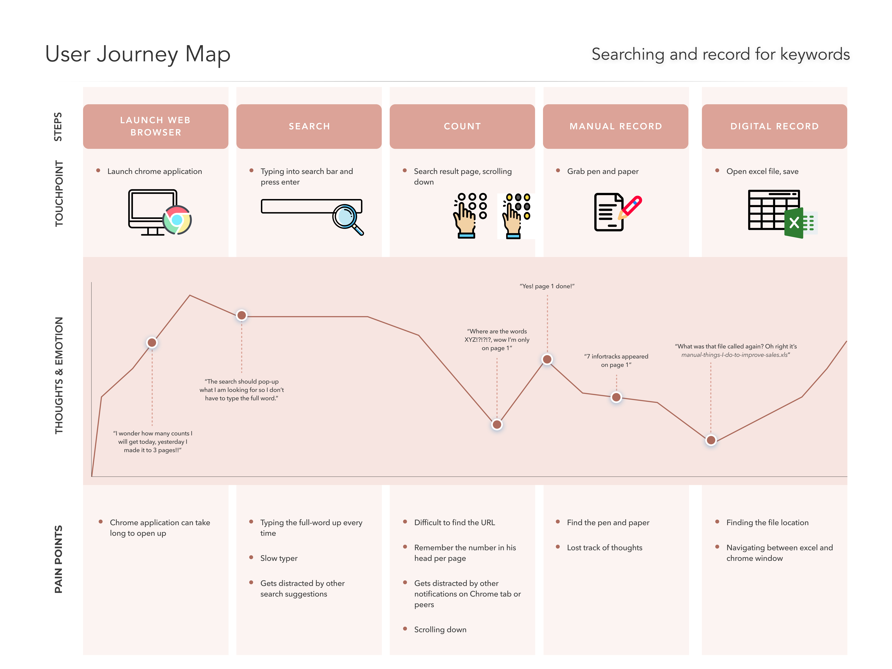
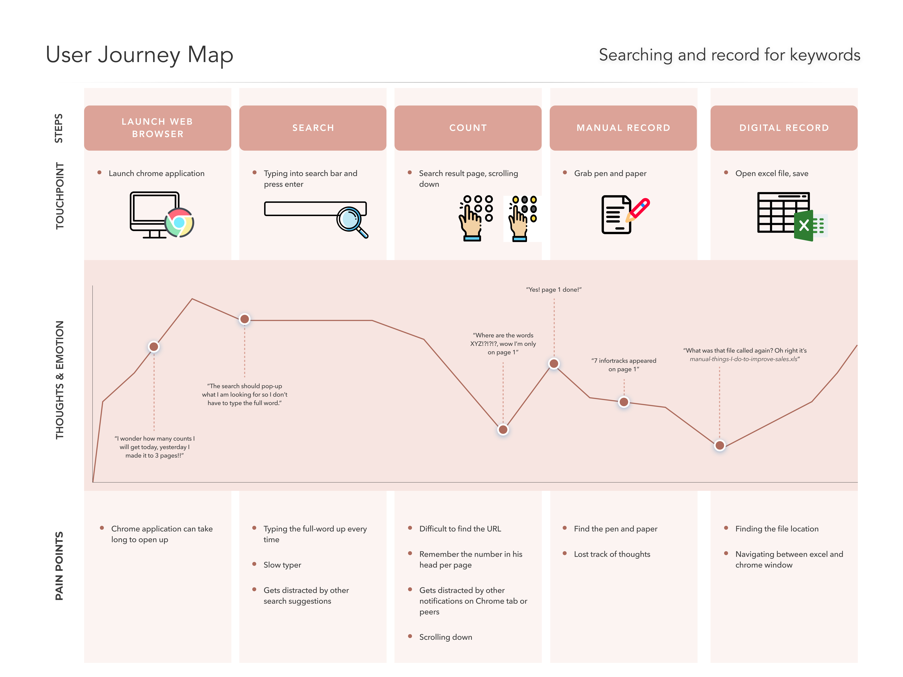
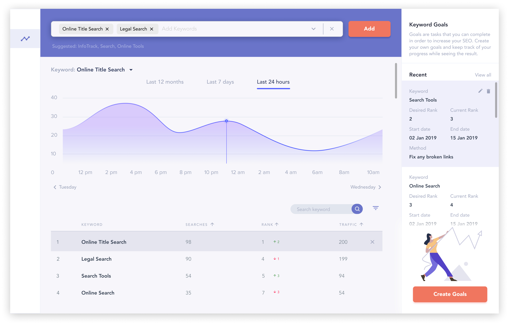
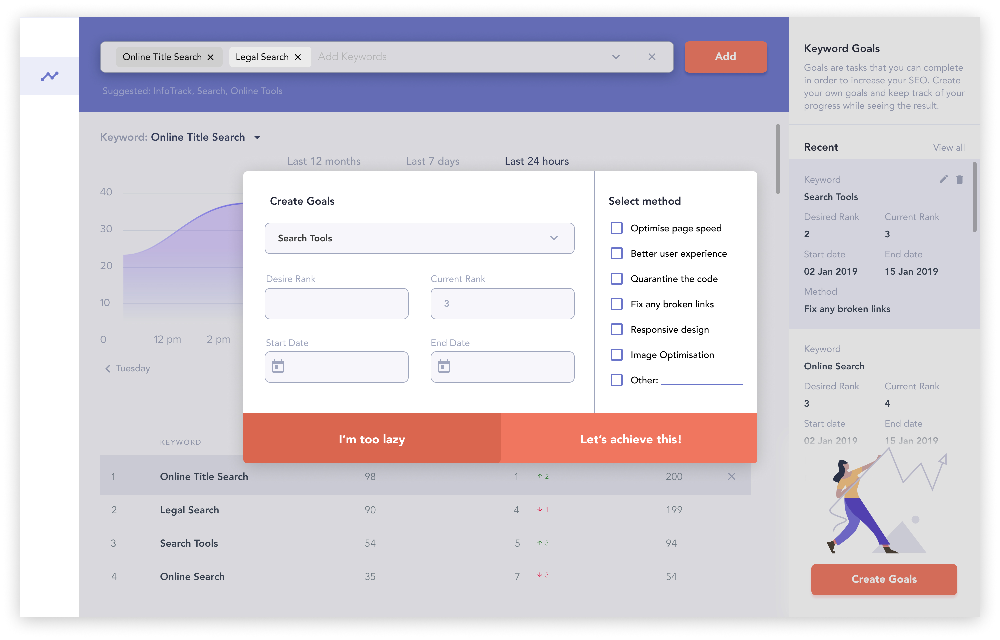

Overview
The CEO is very interested in SEO and wants to improve sales. Currently, he types in “online title search” and counts down to see where and how many times his company, XYZ, sits on the list. This project can be time consuming and unreliable where counts can lose track.
Note: This project is not a billable project and was only considered as part of everyday design practise.
Objective
The objective of this project is to design a web-based application that can automatically perform this operation and records the results. The application should also align with the goal, which is to improve the company's sales.
Workflow
Background Research
A lot of research goes into how the SEO software application works. Looking at competitors, I gathered common features and analyse their tool to understand the purpose of an SEO and the potential of the application.
Empathise
Completing the CEO's persona allows me to put myself into a manager's role in order to understand their needs and frustrations. Even though the interview with the CEO was not conducted, a thorough research and interview were carefully studied and investigate to create this user persona.
 

Problem StatementHow might we improve sales for busy business owner using SEO
Ideate
After understanding the user's requirement and research into SEO application, I was able to develop the features and requirements to development my own SEO application to fit the design brief.
Here are some of the features:
User should be able to add multiple keywords. Suggested keywords should display
A table display of all the keywords entered by the user. There are the columns heading that would be useful to include [‘Keyword’, ‘Number of searches/time’, ‘rank’]
A line graph to display for each keyword comparing number of searches/time and rank.
User should be able to switch table data display according to per week, per month and per year.
User can create ‘goals’ by adding keyword and desired rank.
User can select start and end date
User can select a method of how the goal should be achieved.
Prototype
The prototype was made in Figma and took about 2 days to complete. This wireframe is the initial landing dashboard page where most of the functions will be used. The colour scheme of purple and red are used to create a modern illustration feel. Red for call to action buttons draw attention to the user.
The main feature is the keyword search, thus, placing the keyword search functionality on the top of the dashboard is prominent for the busy manager to use.
Along the right hand side is the "Goal" column. This allows the user to take further action and motivates their sales drive to increase the desired keyword ranking.
This wireframe below displays what happens after the user clicks "Create Goals". The user will pick the existing keyword from the dropdown list where its "current rank" will automatically be populated. The user will have to input their own "Desire Rank" and set the start and end date.
What's important is the method on how the user will achieve this goal. This will give the user options on how the user can increase sales as well. Multiple methods can be selected but it is recommended to focus on 1-2 in order to keep achieve the goal.
